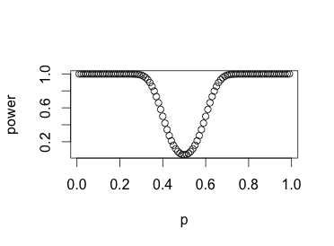

Solution to Exercise¶
(Section 9.11 Problem 2) Which of the following hypothese are simple, and which are composite?
- \(X\) follows a uniform distribution on \([0, 1]\).
- A die is unbiased.
- \(X\) follows a normal distribution with mean \(0\) and variance \(\sigma^2>10\).
- \(X\) follows a normal distribution with \(\mu = 0\).
Solution:
- simple
- simple
- composite
- composite
(Section 9.11 Problem 3) Suppose that \(X\sim bin(100, p)\). Consider the test that reject \(H_0:p=.5\) in favor of \(H_A: p\neq .5\) for \(|X-50|>10\). Use the normal approximation to the binomial distribution to answer the following:
- What is \(\alpha\)?
- Graph the power as a function of \(p\).
Solution:
By CLT, we have \(\sqrt{100}\cdot \frac{(X/100 - p)}{\sqrt{p(1- p)}} \overset{d}{\rightarrow} N(0,1)\). Under the null hypothesis, we can approximately take \(\sqrt{100}\cdot \frac{(X/100-.5)}{.5\cdot(1-.5)}\approx Z\sim N(0,1)\). Thus \(|X - 50| \approx 5|Z|\). The rejection region \(|X - 50| > 10\) is equivalent to \(|Z| > 2\). Then by definition, \(\alpha = \mathbb{P}(|Z|>2) \approx 0.0455\).
Similary, we have the approximation \(\sqrt{100}\cdot \frac{X/100 - p}{\sqrt{p(1-p)}} \approx Z\), which implies \(|X - 50| \approx |10\sqrt{p(1-p)}Z) + 100p -50|\). The power function is \(\beta(p) = \mathbb{P}(|10\sqrt{p(1-p)}Z + 100p - 50|>10)=\mathbb{P}(Z>\frac{6-10p}{\sqrt{p(1-p}} ~or~ Z<\frac{4-10p}{\sqrt{p(1-p)}})\) The graph is as below:

Let \(X\) have one of the following distributions:
\(X\) \(H_0\) \(H_1\) \(x_1\) .2 .1 \(x_2\) .3 .4 \(x_3\) .3 .1 \(x_4\) .2 .4 - Compare the likelihood ratio, \(\Lambda\), for each possible value \(X\) and order the \(x_i\) according to \(\Lambda\).
- What is the likelihood ratio test of \(H_0\) versus \(H_A\) at level \(\alpha = .2\)? What is the test at level \(\alpha = .5\)?
Solution:
\(\Lambda(x) = \frac{p(x|H_0)}{p(x|H_1)}\), thus we have \(\Lambda(x_4) = \frac{1}{2}<\Lambda(x_2) = \frac{3}{4} <\Lambda(x_1) = 2 <\Lambda(x_3) = 3\).
The \(.2\) level likelihood ratio test is
\(\Lambda(X) \leq \frac{1}{2}\) or \(X = x_4\) since \(\mathbb{P}(X = x_4|H_0) = 0.2\).
The \(.5\) level likelihood ratio test is
\(\Lambda(X) \leq \frac{3}{4}\) or \(X = x_2~or~x_4\) since \(\mathbb{P}(X = x_4~or~ X = x_2|H_0) = 0.5\).
A trial had the following characteristics. Recent research suggests dogs could be helpful in detecting when a person has cancer. 6 dogs were enrolled in 9 trials. In each of the 54 trials, one urine sample from patient with bladder cancer was randomly placed among six control urine samples. In the 54 trails, the dogs made the correct selection 22 times. Does this study provide evidence that the dogs’ predictions are better than random guessing? (Assume that it’s OK to use the test we design for Binomial data for simple vs simple and say whether or not you would reject thenull. Please first formulate the null hypothesis and the alternative hypothesis).
Solution:
We can use similar arguments in Problem 2, that is, the number of correct selections \(X\), follows \(Binom(54, p)\) and our hypotheses are \(H_0: p = \frac{1}{7}\) v.s. \(H_1: p \neq \frac{1}{7}\). By normal approximation, we have
\(\sqrt{54}\cdot \frac{X/54 - p}{\sqrt{p(1-p)}} \approx Z \sim N(0,1)\)
Then we can provide an \(\alpha\) level rejection region as
\(|3\sqrt{6} \frac{X/54 - 1/7}{\sqrt{1/7\cdot(1 - 1/7)}}| > z_{1 - \alpha/2}\)
or
\(X > \frac{54}{7} + \frac{18}{7}z_{1-\alpha/2}~or~ X < \frac{54}{7} - \frac{18}{7} z_{1-\alpha/2}\)
Set \(\alpha = 0.05\), which is a common standard, the rejection region is
\(X \geq 10~or~ X\leq 5\)
Since \(X = 22\), it implies that the dogs’ predictions are better than random guessing.
(Section 9.11 Problem 6) Consider the coin tossing example of Section 9.1. Suppose that instead of tossing the coin 10 times, the coin was tossed until a head came up and the total number of tosses, \(X\), was recorded.
- What is the significance level of a test that rejects \(H_0\) if \(X\geq 8\)?
- What is the power of this test?
Solution:
- This is a geometric distribution with \(G(p)\). We have hypotheses as \(H_0: p = 0.5\) v.s. \(H_1: p = 0.7\). The significance level is \(\mathbb{P}(X \geq 8|H_0) = 1 - \sum_{k=1}^8 (1-0.5)^{k-1}\cdot 0.5 = (0.5)^8 \approx 0.0039\).
- The power is \(\mathbb{P}(X \geq 8|H_1) = 1 - \sum{k = 1}^8 (1-0.7)^{k-1}\cdot 0.7 = 6.561e-05\)
(Section 9.11 Problem 7) Let \(X_1, \dots, X_n\) be a sample from a Poisson distribution. Finde the likelihood ratio for testing \(H_0: \lambda = \lambda_0\) versus \(H_A: \lambda = \lambda_1\), where \(\lambda_1 > \lambda_0\). Use the fact that the sum of independnet Poisson random variables follows a Poisson distribution to explain how to determine a rejection region for a test at level \(\alpha\). And how to compute the power.
Solution:
The likelihood ratio is
\(\Lambda_1(x) = \frac{f_0(x)}{f_1(x)} = (\frac{\lambda_0}{\lambda_1})^x e^{\lambda_1 - \lambda_0}\)
Denote \(Y = \sum_{i=1}^n X_n\), then \(Y\sim Poisson(n\lambda)\). The likelihood ratio test for \(Y\) is
\(\Lambda_n(Y) = (\frac{\lambda_0}{\lambda_1})^Y exp(n(\lambda_1 - \lambda_0)) \leq c(\alpha)\) or \(Y \geq \tilde{c}(\alpha)\), where :math:`tilde{c}(alpha) is determined as
\(\tilde{c}(\alpha):=arg\max_{c} \mathbb{P}(Y\geq c|H_0)\leq\alpha\)
As for the power, once we figure out \(\tilde{c}\), it can be computed as
\(1 - \mathbb{P}(Y \geq \tilde{c}(\alpha))\)
(Note that \(\mathbb{P}(Y \geq c) = \sum_{k\geq c} \frac{(n \lambda)^k}{k !} e^{-n\lambda}\), where \(\lambda = \lambda_0\) under \(H_0\) or \(\lambda = \lambda_1\) under \(H_1\)).